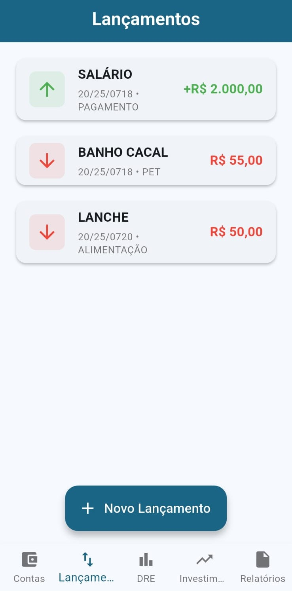

Sobre o App
Visão Clara dos Seus Gastos
O Money simplifica o registro de despesas, permitindo que você categorize cada gasto para ter uma visão clara de onde seu dinheiro está sendo direcionado. Diga adeus às surpresas no final do mês!
Organização e Planejamento
Com o Money, você pode organizar suas finanças, definir orçamentos para diferentes categorias e acompanhar seu progresso. É a ferramenta ideal para quem busca mais controle e menos preocupação.
Desenvolvimento Contínuo
O Money está em fase inicial, mas já oferece funcionalidades essenciais. Estamos em constante aprimoramento, com base em feedback, para entregar a melhor experiência de controle financeiro.
Telas do Aplicativo




Baixe e Teste Agora
Como instalar o APK no Android:
1. Toque no botão "Baixar APK" acima.
2. Após o download, abra o arquivo Money.apk no seu gerenciador de arquivos ou notificações.
3. Caso apareça um aviso de segurança sobre "Fontes Desconhecidas", toque em "Configurações" e ative "Permitir desta fonte" (o texto pode variar ligeiramente dependendo do seu Android).
4. Volte e confirme a instalação.
Pronto! O app estará disponível na sua lista de aplicativos para você começar a controlar suas finanças.